Portfolio
Lycée — NSI
BUT Info — 1re année
BUT Info — 2e année
À propos de moi
Je suis étudiante en deuxième année de BUT Informatique à l'Université de Sorbonne Paris Nord (Villetaneuse), et j'ai validé ma première année.
Diplômée du BAC avec mention assez bien (spécialités NSI et SVT), j'ai toujours été animée par des centres d'intérêt variés, allant de la littérature et des arts (notamment le dessin traditionnel et numérique, ou encore le crochet) aux sciences biologiques et à la programmation. J'aime particulièrement inventer de nouvelles choses et concevoir des univers originaux à travers l'écriture de récits et de nouvelles. Bien que j'aie ces multiples passions, c'est dans l'informatique que je souhaite m'investir professionnellement.
D'un naturel dynamique, j'assimile rapidement les nouveaux concepts et fais facilement le lien avec mes acquis précédents. J'ai un esprit très logique qui apprécie l'algorithmie, couplé à une grande rigueur : j'analyse les projets et planifie mes tâches (comme la création d'un sommaire) avant de commencer à développer. Cette structuration me permet d'être efficacement multitâche, par exemple en concevant le front-end d'un site web tout en réfléchissant à son back-end. De plus, je sais garder l'esprit clair et travailler efficacement même sous la pression des deadlines.
Ma capacité de concentration est un de mes grands atouts : habituée à lire rapidement et à m'isoler dans des environnements bruyants, je peux rester focalisée des heures sur une tâche complexe. Je fais preuve de beaucoup de patience pour résoudre des problèmes, notamment lorsqu'il s'agit de démêler des règles de style CSS récalcitrantes.
Le travail en équipe et l'humain restent au centre de ma démarche. Je suis toujours prête à aider et à réexpliquer des concepts techniques à mes camarades sous différents angles. Cette empathie se reflète aussi dans mon code : je me mets systématiquement à la place du client pour concevoir des interfaces les plus intuitives et visuellement fidèles possibles.
À terme, j'aimerais m'orienter vers le secteur du jeu vidéo, un domaine idéal pour allier ma logique de programmation à ma sensibilité créative et narrative. J'aimerai intégrer un master dans ce domaine pour m'y spécialiser.
Jeu de Morpion
En Première, lors de la spécialité NSI, j'ai réalisé plusieurs projets pour mettre en pratique les notions vues en cours. Ce Morpion a été mon tout premier projet de l'année — le point de départ de mon apprentissage de Python.
Mes tâches principales ont consisté à développer la logique complète d'un jeu de Morpion textuel, jouable directement dans la console contre un deuxième joueur ou un ordinateur.
J'ai dû modéliser la grille de jeu à l'aide de tableaux, concevoir la boucle principale pour alterner les tours de jeu, et coder les vérifications (conditions de victoire, d'égalité ou case déjà occupée).
Cela impliquait également de créer des fonctions pour gérer les interactions avec l'utilisateur (récupération des coordonnées sous forme de ligne/colonne) et programmer les réponses automatiques de l'ordinateur.
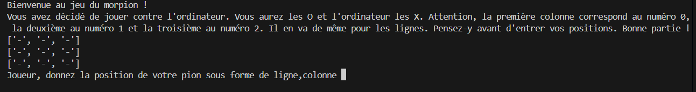
Bien que la mécanique de base du jeu soit fonctionnelle, l'ordinateur joue actuellement ses coups de manière totalement aléatoire. Dans l'optique de mon projet professionnel tourné vers le jeu vidéo, une excellente piste d'amélioration serait d'implémenter un algorithme d'intelligence artificielle (comme l'algorithme Minimax). L'objectif serait de doter l'ordinateur d'une véritable capacité d'anticipation et d'évaluation de la grille pour lui permettre de bloquer le joueur ou de chercher la victoire stratégiquement.
Site web
Réalisé en classe de Première NSI, ce projet consistait à concevoir un site web complet d'au moins cinq pages, incluant une navigation via un sommaire.
Le choix du sujet étant libre, j'ai saisi l'opportunité de mettre en valeur mon attrait pour l'écriture en concevant ce site autour de l'une de mes propres histoires narratives.
Ce projet a marqué ma véritable initiation au développement web, de la page blanche jusqu'au rendu final.
J'ai structuré l'arborescence et le contenu des différentes pages en HTML, puis j'ai géré l'habillage visuel (images de fond, typographie, couleurs) via des feuilles de style CSS.
Si des restrictions techniques sur les postes du lycée m'ont empêchée d'exécuter la partie backend en PHP comme initialement prévu, j'ai su m'adapter en intégrant mes premiers scripts en JavaScript afin d'apporter du dynamisme et de l'interactivité à mon interface.
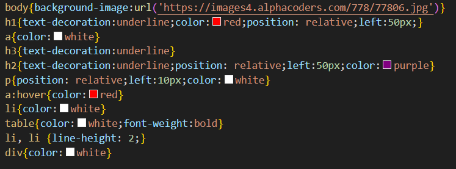
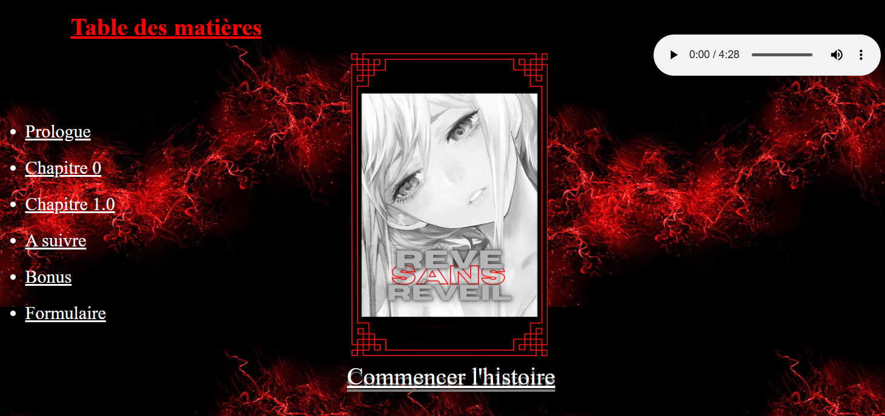
Ce projet s'étant heurté à des contraintes matérielles m'empêchant de déployer le PHP, il est resté principalement statique. Fort de mon expérience acquise en BUT sur les architectures web, une évolution pertinente serait de reprendre ce premier projet pour le transformer en une véritable application dynamique. Je pourrais y intégrer un back-end solide (en PHP ou via un framework comme Flask) couplé à une base de données, ce qui permettrait de gérer la publication et l'affichage des histoires de manière totalement automatisée.
SAÉ 1.01 · Implémentation : Etude de communautés dans un réseau social
Le but de cette SAÉ (Situation d’Apprentissage et d’Evaluation) était d'étudier et de modéliser des communautés au sein d'un réseau social.
L'objectif principal était d'apprendre à représenter ces réseaux sous différentes formes de structures de données (tableaux, fichiers CSV, dictionnaires) afin de pouvoir les analyser informatiquement et en extraire des informations clés, comme le nombre d'amis d'un utilisateur, la taille globale du réseau ou l'identification des personnes les plus populaires.
Mes tâches principales ont consisté à développer divers algorithmes et fonctions en Python pour manipuler et interagir avec les données du réseau.
J'ai notamment codé des fonctions permettant de parcourir des tableaux d'interactions pour isoler des utilisateurs uniques, rechercher des profils spécifiques, et calculer des statistiques sur la communauté, le tout structuré, documenté et testé dans Jupyter Notebook.
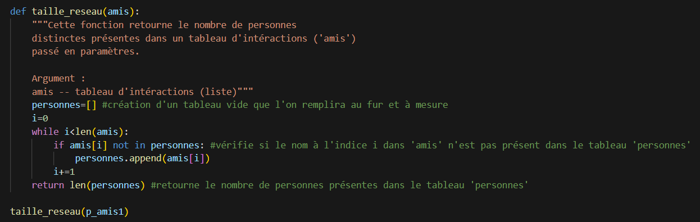
Pour ce premier projet, j'ai réussi à concevoir des algorithmes fonctionnels pour manipuler mes tableaux et extraire les données. Avec le recul, une piste d'amélioration majeure serait d'analyser et de réduire la complexité temporelle de mes fonctions. L'objectif serait d'optimiser mon code (notamment en évitant les parcours de tableaux redondants ou les boucles imbriquées inutiles) afin que la recherche d'amis ou le calcul de la taille du réseau restent instantanés, même sur des communautés contenant des milliers d'utilisateurs.
SAÉ 1.02 · Comparaison d’algorithmes : Communautés dans un réseau
Le but de cette SAÉ (Situation d’Apprentissage et d’Evaluation), qui s'inscrit dans la continuité de la SAÉ 1.01, était d'étudier et de comparer différents algorithmes appliqués aux réseaux sociaux.
L'objectif était d'approfondir la manipulation de ces réseaux, modélisés cette fois-ci exclusivement sous forme de dictionnaires, afin de mieux analyser les relations entre les utilisateurs.
Il s'agissait notamment de comprendre comment vérifier si un groupe forme une véritable communauté (où chaque membre est ami avec tous les autres) ou comment en générer une à partir d'un réseau existant.
Mes tâches principales ont consisté à développer et implémenter des algorithmes spécifiques en Python pour traiter ces données.
J'ai par exemple codé un algorithme de tri par insertion permettant de classer les membres d'un groupe par ordre de popularité (nombre d'amis) décroissante.
J'ai également conçu des fonctions logiques pour extraire, analyser et valider des communautés au sein du dictionnaire global.
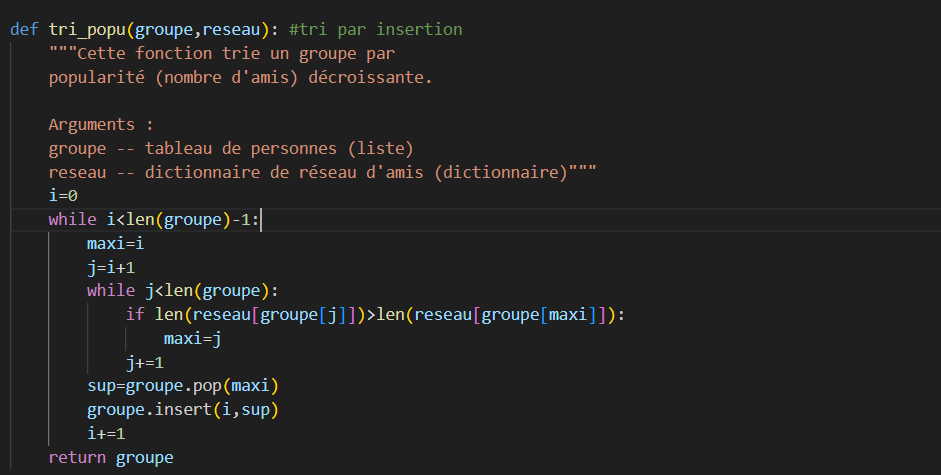
J'ai notamment implémenté un algorithme de tri par insertion pour classer les groupes par popularité. Bien qu'il soit efficace sur de petites communautés, j'ai conscience de ses limites sur de gros volumes de données. Mon axe de progression serait d'implémenter des algorithmes de tri plus avancés (comme le tri rapide ou le tri fusion) et de mieux exploiter la rapidité d'accès par clé qu'offrent les dictionnaires, afin de réduire drastiquement le temps de traitement de mes comparaisons.
SAÉ 1.04 · Création d’une base de données : Climate-related disasters frequency
Le but de cette SAÉ (Situation d’Apprentissage et d’Evaluation) était de concevoir, mettre en place et alimenter une base de données relationnelle destinée à stocker des mesures de fréquence relatives aux catastrophes climatiques (telles que les sécheresses, les feux de forêt, les inondations, etc.).
L'objectif principal était de structurer ces informations afin de pouvoir y intégrer et centraliser des données extérieures massives provenant d'un fichier CSV.
Mes tâches principales ont consisté à utiliser un Atelier de Génie Logiciel (AGL), en l'occurrence MySQL Workbench, pour concevoir et dessiner visuellement le Modèle Physique de Données (MPD).
À partir de ce schéma, j'ai généré automatiquement le script SQL de création. J'ai ensuite instancié cette base de données et procédé à son alimentation en important les données du fichier CSV dans les différentes tables.
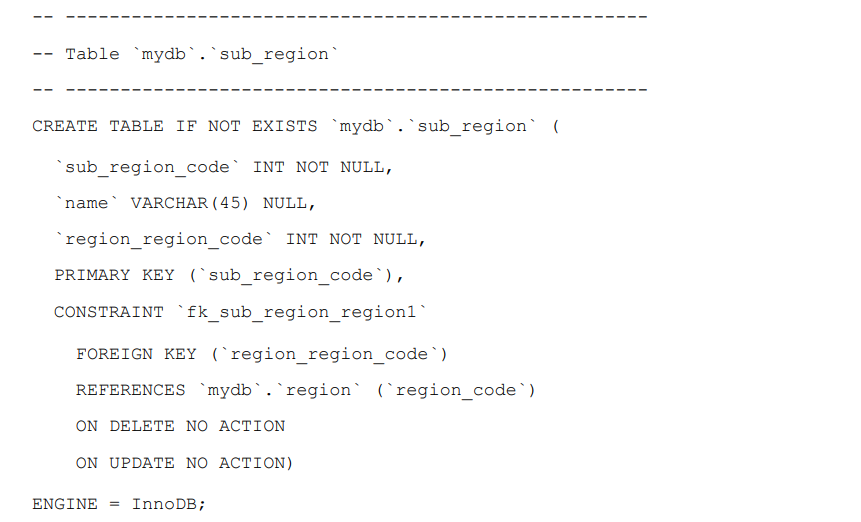
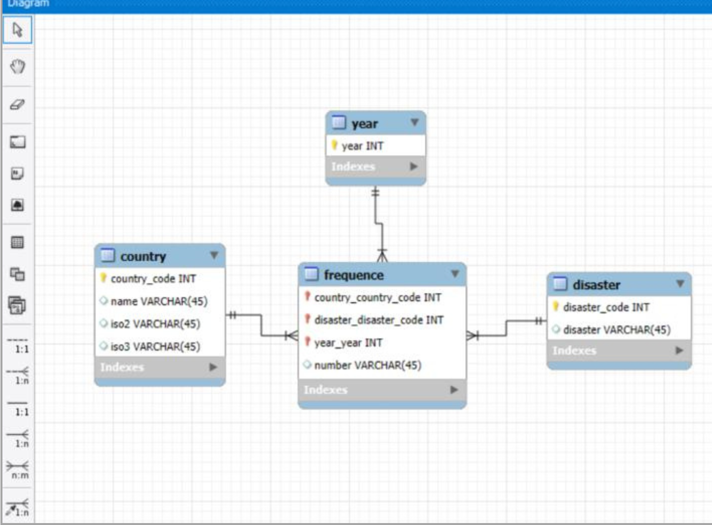
Lors de cette SAÉ, l'importation des données s'est faite à partir d'un fichier CSV dont la structure correspondait déjà bien à ma base de données. Pour me rapprocher des problématiques réelles du monde professionnel, une excellente piste d'amélioration consisterait à traiter des jeux de données bruts et beaucoup plus complexes. L'objectif serait de développer un script d'importation automatisé (par exemple en Python) agissant comme un processus ETL (Extraction, Transformation, Chargement) afin de nettoyer, filtrer et formater la donnée en amont avant de l'insérer de manière sécurisée dans les tables SQL.
SAÉ 2.01 · Développement d’une application : Jeu d’échecs
Le but de cette SAÉ (Situation d’Apprentissage et d’Evaluation), réalisée en binôme, était de développer une application logicielle d'un jeu d'échecs complet pour deux joueurs.
L'objectif principal était de mettre en pratique les concepts fondamentaux de la Programmation Orientée Objet (POO) afin de modéliser le plateau, le comportement des pièces et les règles spécifiques du jeu.
M'étant occupée de la moitié du développement du projet, mes tâches principales ont consisté à concevoir et coder plusieurs classes représentant les différentes pièces et leurs fonctionnalités.
J'ai notamment implémenté la logique de mouvement spécifique à certaines pièces (comme la Tour) en exploitant les mécanismes d'héritage pour utiliser et adapter les méthodes issues de classes parentes. Le tout a été géré de manière collaborative grâce au contrôle de version.
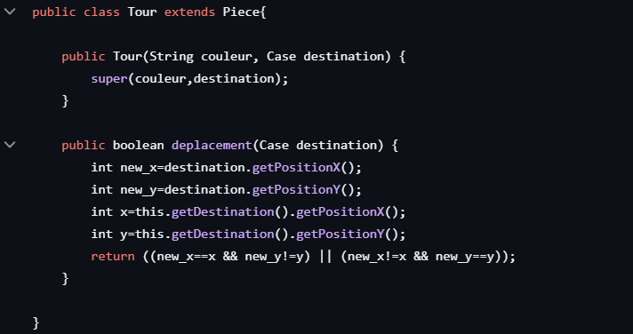
Par manque de temps, le projet est resté à l'état de logique pure sans interface graphique. Pour le BUT 3, j'aimerais consolider mes compétences en Java en appliquant des motifs de conception spécifiques au jeu vidéo et en apprenant à utiliser une bibliothèque graphique (comme JavaFX ou LibGDX) pour rendre ce type d'application jouable et visuellement aboutie.
SAÉ 3.01 · Développement d'une application : Diffusion sonore
Le but de cette SAÉ (Situation d’Apprentissage et d’Evaluation) en groupe était de créer un site de supervision de diffusion sonore pour magasins, pour diffuser de la musique et des messages. L'objectif principal est de garantir une diffusion en continue (pas de coupure audio même en cas de panne réseau), notamment à l’aide de playlists de secours locales, tout en permettant à un administrateur de surveiller l’état et l’historique des lecteurs à partir du site.
Trois rôles doivent être présents :
- L'administrateur, qui a accès à toutes les fonctionnalités, peut créer et supprimer des utilisateurs et gérer les lecteurs
- Le commercial, qui crée les plannings et enregistre les messages
- Le marketing, qui crée les playlists et enregistre les musiques
Mes tâches principales ont été la création de l’intégralité de l’interface du site (HTML, CSS, JS) mais j’ai également participé à la création de contrôleurs Flask (le login, le signin) et au débogage d’une grande partie du code.
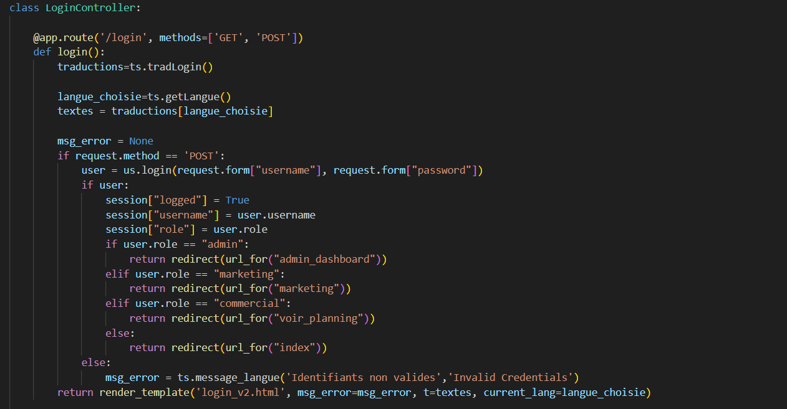
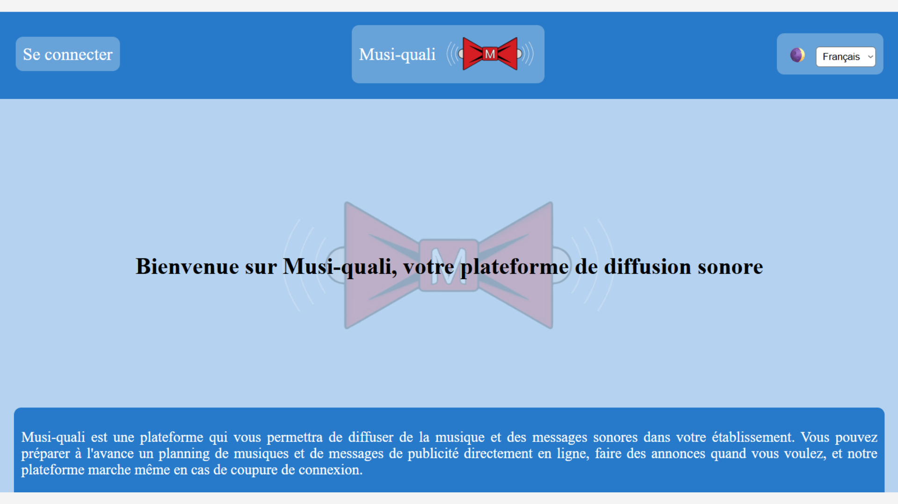
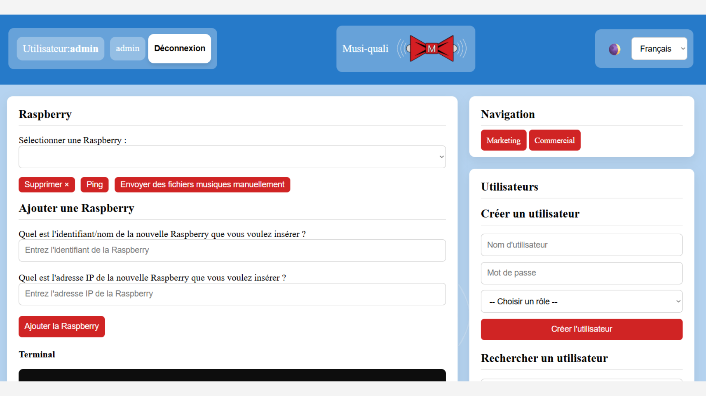
LCe projet m'a fait réaliser l'importance de l'expérience utilisateur. Mon axe de progression pour le semestre suivant (S4) a donc été de me former en profondeur sur l'UX/UI et d'apprendre l'AJAX pour éviter les rechargements de page, ce que j'ai pu appliquer avec succès lors de la refonte en SAÉ 4.01.
SAÉ 4.01 · Développement d'une application complexe : Diffusion sonore (suite)
Le but de cette SAÉ (Situation d’Apprentissage et d’Evaluation) en groupe était de reprendre un site de supervision de diffusion sonore (SAÉ 3.01) et de l’améliorer. Pour cette SAÉ, mon groupe et moi avons repris notre projet précédent pour l’améliorer.
Mes tâches principales ont été la refonte du site web, notamment d’imaginer une nouvelle DA et de nouvelles interactions UX/UI. Je me suis occupée de l’intégration de CSS et JavaScript dans le code des pages et de créer plusieurs fonctionnalités, telles que la recherche, le tri, l’envoi de requêtes aux administrateurs et un système de mot de passe oublié.
Mes tâches secondaires ont été d’imaginer et de créer des réactions UX/UI agréables, telles que les fenêtres modales, des notifications “toast” non intrusives, et de veiller à l’épuration de l’espace visuel. J'ai également participé à la refonte de la base de données.
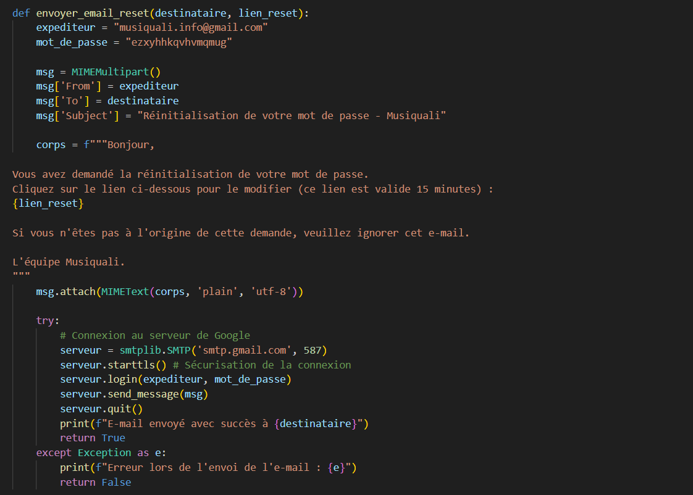
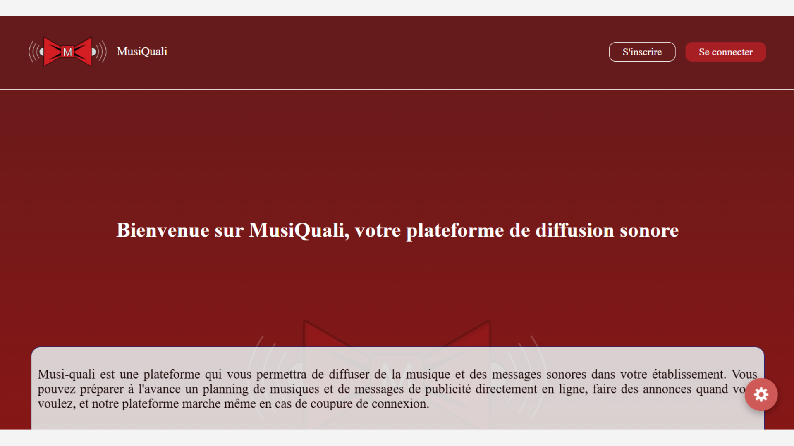
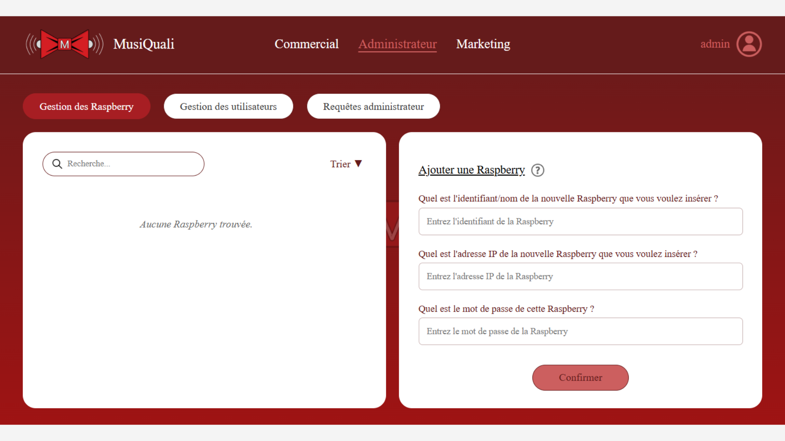
Le code JavaScript et les requêtes AJAX commençaient à devenir denses. Une piste d'amélioration majeure pour ma troisième année serait d'apprendre un framework Front-end moderne (comme React ou Vue.js) pour mieux structurer des interfaces web dynamiques complexes.
Stage de développement web
Réalisé au cours de ma deuxième année de BUT Informatique, ce stage de deux mois au sein de l'entreprise Chiesi avait pour but la création d'un site web hébergeant un plan interactif de leurs locaux.
L'enjeu était de proposer une solution fluide, intuitive et responsive (parfaitement adaptée aux supports PC et mobile), pensée en étroite collaboration avec une UX/UI designer.
J'ai pris en charge, en totale autonomie, l'intégralité du développement full-stack de ce site (frontend et backend).
Mes missions ont couvert tout le cycle de vie du projet :
L'intégration fidèle des interfaces validée par des points de synchronisation hebdomadaires avec la designer, le développement des fonctionnalités interactives, jusqu'à ma participation active au déploiement final de l'application.
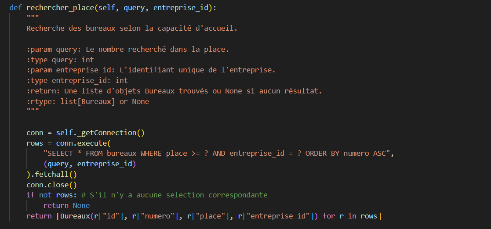
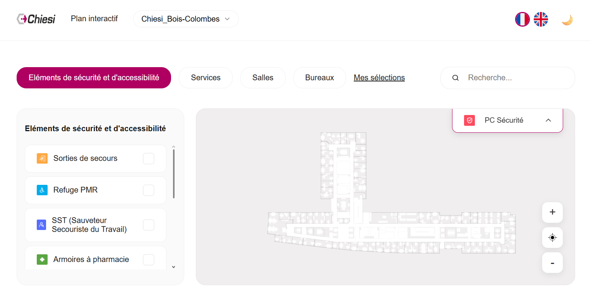
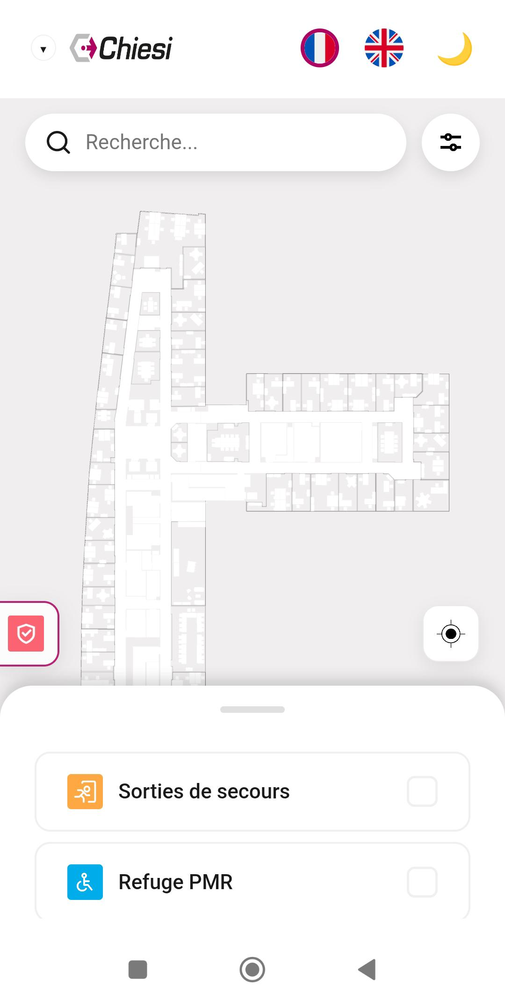
J'ai développé ce projet en autonomie de A à Z. Pour préparer mon entrée dans le monde professionnel, j'aimerais profiter du BUT 3 pour me former aux tests automatisés et à l'intégration continue (CI/CD) afin de sécuriser mes futurs déploiements.